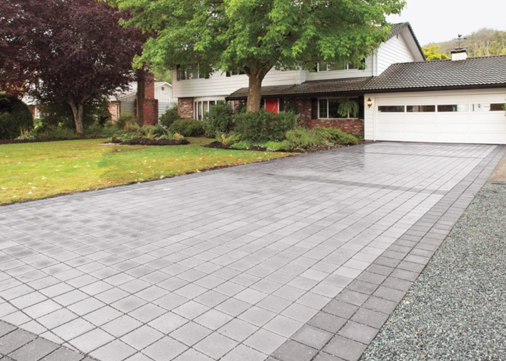

01 — What we build
Hardscape, done right.
A full range of paving and masonry services for homes and businesses. Whether it's a new driveway, a custom patio, or repairs to existing stonework, we handle every project with care and precision.

— 01
Driveway Installation
Asphalt and paver driveways, built smooth, durable, and graded to drain.
→

— 02
Patios & Outdoor Living
Beautiful outdoor spaces designed for comfort, entertaining, and everyday use.
→

— 03
Brick & Stone Work
→

— 04
Walkways & Steps
→

— 05
Retaining Walls
→
Also offered
Concrete Work
Asphalt Paving
Masonry Repairs
Sidewalks
Custom Projects
Commercial Lots